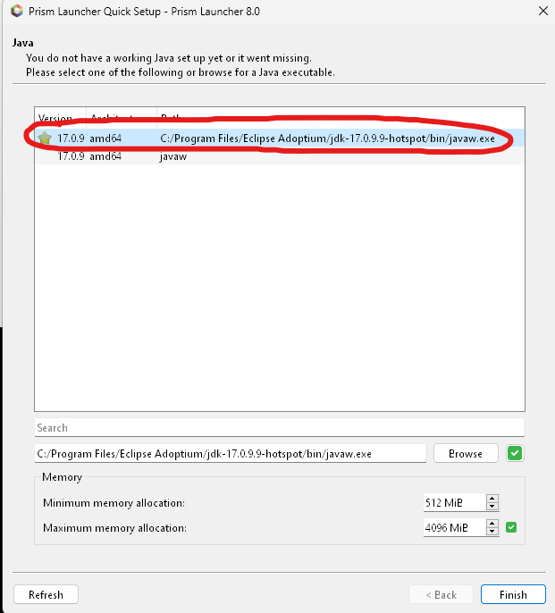

I assume you own Minecraft right? If you don't then GO BUY IT. Anyways we need a version of Java that can run all the shit.
If you know how to install Java standalone and don't want to install the Minecraft Launcher etc. then w/e don't read this part, but FOR EVERYONE ELSE:
Install Minecraft using THE MINECRAFT LAUNCHER: https://www.minecraft.net/en-us/download

Log in, install it, make sure you can open up MINECRAFT: Java Edition. If you successfully ran Minecraft then you are ALL SET to go forward.
Now here is where the fun part starts. You need to install the Prism Launcher from https://prismlauncher.org/

Run the installer, all the defaults are just fine, just click next next next finish until the Prism Launcher starts.
---
Select your language (I'd suggest American English just for convenience sake...), and then you get to select your Java version. If you installed Java manually earlier then you should know what to pick, but everyone else pick the one inside the red circle. You can also increase the max memory allocation if your PC has a lot of RAM, in case things get very populated in the server.
If you want to mess with the launcher settings then be my guest, but I'd just click "Finish" because who cares.
---
Now, that we have the launcher installed we can get to installing the actual mod pack...
You can download the mod pack from here:
BrahkieMMP.zip (29 677 kb) MD5: bd5ee5171de0b1c81c16d9311f67418
Once you have that on your disk in a place you can remember, please click "Add Instance" from the Prism Launcher. Then select "Import" from the left menu. Then click "Browse" and locate the BrahkieMMP.zip and select it.

---
Your Prism Launcher should now look something like this
Excited to play, you go click "Launch" and OH NO what happened!

Yeah... Prism Launcher wants your IP, postcode, CC number and the 3 numbers on the other side to verify that you actually own Minecraft.
We can fix this though by clicking the "Yes" button, and when the settings panel opens click "Add Microsoft" in top right.
It asks you to input a code on a web page, but the easiest way to MAKE SURE this works, is to do the following steps:
You should now have your Microsoft account linked to the Prism Launcher.
If you got to the account linking part through the "Launch" button, the game will now attempt to start, otherwise go ahead and click "Launch". This means lots of downloading and scary text going really fast, don't worry. When the downloads are gone it might seem that nothing happens for a while, but be patient and eventually the game will launch :)
Go ahead and set your preferences and whatnot, but when you are ready click "Multiplayer" from the main menu, and accept the whatever warning it says to accept (don't know what it says because I didn't read it).
To add the server:

You should now see the server in the server list. Just select it and click "Join".
---
idk ask the mods or something I never got past this and they won't reply to my DMs ðŸ˜